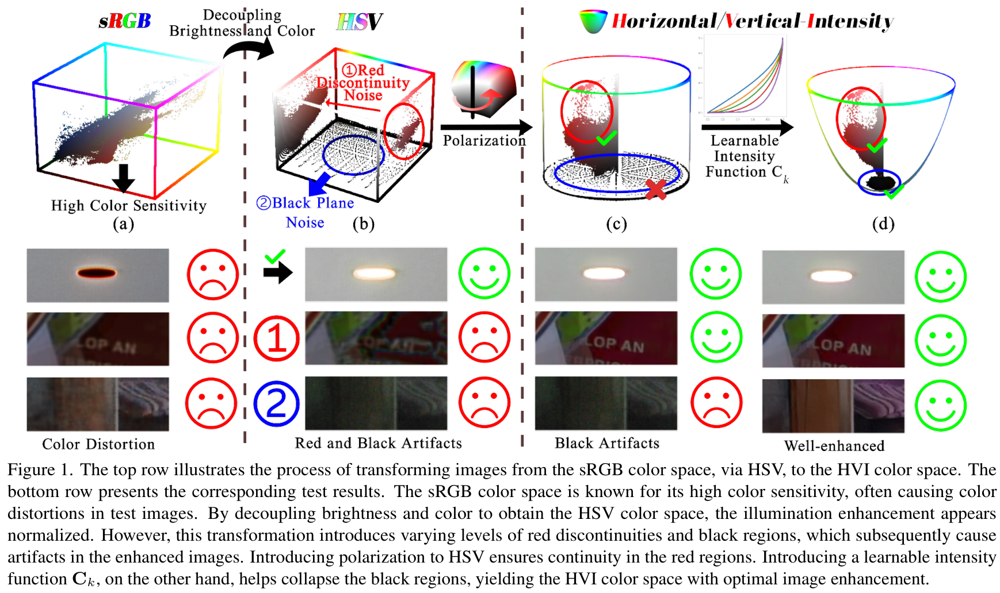
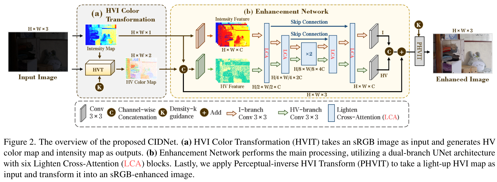
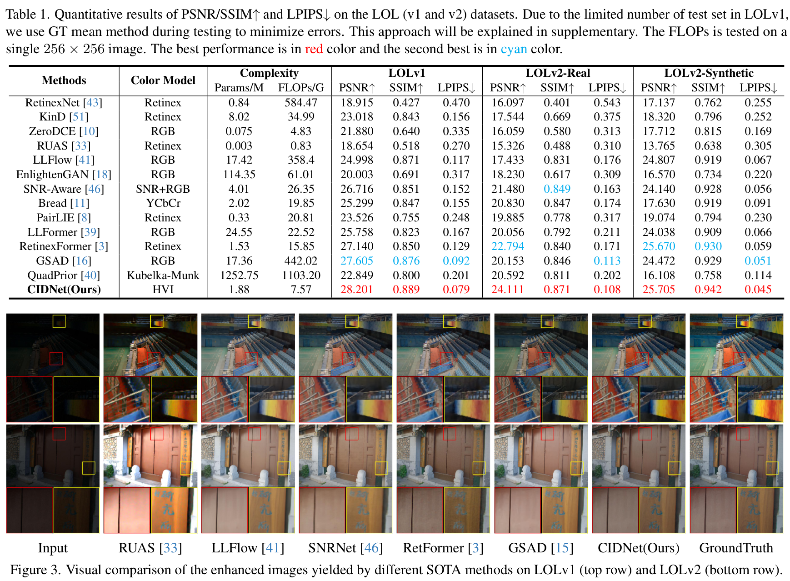
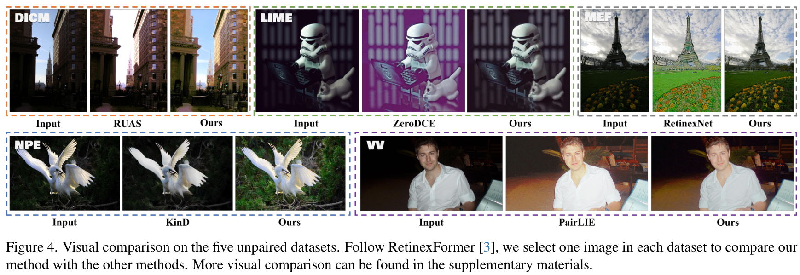
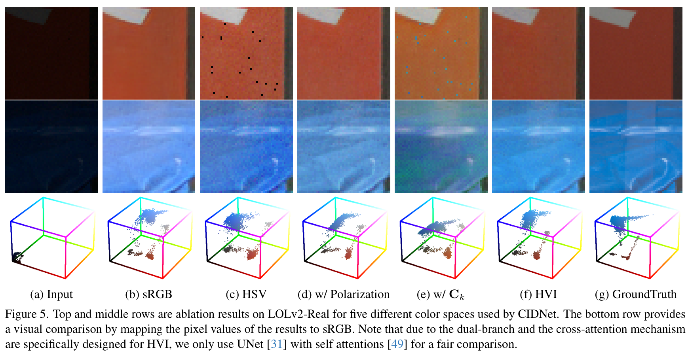

HVI: Không Gian Màu Mới Cho Tăng Cường Ảnh Thiếu Sáng
HVI: A New Color Space for Low-light Image Enhancement
Hầu hết các giải thuật tăng cường ảnh thiếu sáng (LLIE) hiện nay thao tác trực tiếp trong không gian màu tiêu chuẩn sRGB hoặc chuyển đổi sang không gian HSV. Tuy nhiên, trong không gian sRGB, thông tin cường độ chiếu sáng (illumination) và thông tin sắc độ màu sắc (chromaticity) bị liên kết chặt chẽ (entangled), khiến việc kích sáng bức ảnh tất yếu dẫn đến hiện tượng méo mó màu sắc và bão hòa cục bộ. Mặt khác, việc chuyển sang HSV mặc dù tách được kênh độ sáng V, nhưng lại sinh ra hai dạng nhiễu không gian màu (color space noises) vô cùng nghiêm trọng: (1) Hiện tượng đứt gãy màu đỏ (red discontinuity) do tính chất tuần hoàn theo chu kỳ modulo của trục Hue ($h=0$ và $h=6$), và (2) Hiện tượng kỳ dị mặt phẳng đen (black plane noise) khi độ bão hòa $S$ sụp đổ không xác định ở vùng bóng tối cực sâu. Để giải quyết triệt để vấn đề gốc rễ này, chúng tôi đề xuất Không gian màu HVI (Hue, Value, Intensity) hoàn toàn mới. HVI giải quyết hiện tượng đứt gãy màu đỏ bằng phép phân cực góc trực giao (polarized HS) và giải quyết nhiễu vùng tối bằng hàm sụp đổ cường độ khả vi (learnable intensity collapse function $C_k$). Đồng thời, chúng tôi thiết kế mạng nơ-ron hai nhánh CIDNet (Color and Intensity Decoupling Network) xử lý độc lập mặt phẳng màu sắc HV và trục cường độ I. CIDNet thiết lập kỷ lục SOTA mới trên LOLv1 (28.20 dB PSNR), LOLv2-Real (24.11 dB), và vượt trội các phương pháp trước tới +6.68 dB trên tập dữ liệu bóng tối cực độ Sony-Total-Dark chỉ với 1.88M tham số.

1. Giới Thiệu (Introduction)
Trong bài toán tăng cường ảnh thiếu sáng (LLIE), việc lựa chọn không gian màu biểu diễn hình ảnh (color space representation) đóng vai trò quyết định tới chất lượng phục hồi. Khi chụp trong điều kiện đói quang tử, cảm biến máy ảnh tạo ra các giá trị điểm ảnh sRGB với độ nhạy nhiễu rất cao. Nếu một mạng nơ-ron thực hiện biến đổi trực tiếp trên các kênh RGB, sự khuếch đại tín hiệu sáng sẽ làm sai lệch tỷ lệ giữa ba kênh Red, Green, Blue, gây ra hiện tượng đổi màu (color shifting) và quầng màu giả.
Các nghiên cứu quang học kinh điển [9, 34] đề xuất tách rời thành phần chiếu sáng và thành phần sắc độ bằng cách chuyển sang không gian màu HSV (Hue - Sắc màu, Saturation - Độ bão hòa, Value - Giá trị sáng tối). Tuy nhiên, phép biến đổi toán học phi tuyến sang HSV tạo ra hai khuyết tật cố hữu:
- Đứt gãy màu đỏ (Red Discontinuity): Trục góc Hue được biểu diễn từ 0 đến 6 (hoặc $0^\circ$ đến $360^\circ$). Màu đỏ thực tế nằm ở cả hai đầu mút giới hạn ($h o 0$ và $h o 6$). Trong không gian Euclid, hai điểm ảnh màu đỏ rất gần nhau về mặt thị giác lại có khoảng cách số học cực lớn, gây bối rối cho quá trình tối ưu hóa gradient của mạng nơ-ron.
- Kỳ dị mặt phẳng đen (Black Plane Singularity): Khi cường độ ánh sáng $I_{max} o 0$, giá trị bão hòa màu $S = \Delta / I_{max}$ trở thành phép chia cho 0. Tại vùng bóng tối cực sâu, nhiễu cảm biến nhỏ nhất cũng bị nhân lên vô hạn lần, biến mặt phẳng đen thành một vùng nhiễu hạt bừa bãi.
Bài báo này giải quyết triệt để hai khuyết tật toán học trên bằng cách định nghĩa không gian màu HVI chuẩn xác về mặt vật lý và tương thích hoàn hảo với học sâu.
2. Cơ Sở Toán Học Của Không Gian Màu HVI
2.1 Ước Lượng Cường Độ Theo Lý Thuyết Max-RGB
Thay vì dựa vào các mạng học sâu dự đoán bản đồ ánh sáng đầy rủi ro, chúng tôi kế thừa Lý thuyết Max-RGB [21] để ước lượng trực tiếp bản đồ cường độ chiếu sáng cực đại $I_{max} \in \mathbb{R}^{H imes W}$ tại mỗi điểm ảnh $x$:
Trong biểu diễn HSV kinh điển, độ bão hòa $S$ và góc sắc $H$ được tính theo công thức:
2.2 Phân Cực Trục Sắc Độ (Polarized HS) & Hàm Sụp Đổ Cường Độ ($C_k$)
Để xóa bỏ sự đứt gãy của màu đỏ tại $h=0$ và $h=6$, chúng tôi phân cực trục Hue thành hai tọa độ trực giao trên vòng tròn lượng giác:
Khi được phân cực, mọi màu sắc cùng loại đều nằm gần nhau trong không gian Euclid hai chiều $(h_{ortho}, v_{ortho})$, triệt tiêu hoàn toàn sự nhảy cóc giá trị ở biên màu đỏ.
Để xử lý hiện tượng kỳ dị chia cho 0 ở vùng tối, chúng tôi thiết kế hàm sụp đổ cường độ khả vi (Learnable Intensity Collapse Function $C_k$):
Trong đó $k \in \mathbb{Q}^+$ là tham số có thể huấn luyện học tự động theo từng bộ dữ liệu, và $\epsilon = 10^{-8}$ ngăn chặn bùng nổ gradient. Tọa độ hai kênh sắc độ Horizontal ($\hat{H}$) và Vertical ($\hat{V}$) của HVI được định nghĩa là:
Bộ ba $(\mathbf{\hat{H}}, \mathbf{\hat{V}}, \mathbf{I}_{max})$ tạo thành biểu diễn ảnh hoàn chỉnh trong không gian màu HVI: trơn tru, khả vi, và hoàn toàn miễn nhiễm với nhiễu mặt phẳng đen.

3. Kiến Trúc Mạng Hai Nhánh CIDNet (Architecture)
Nhờ việc phân rã tường minh bài toán màu sắc và bài toán độ sáng, CIDNet không cần sử dụng các khối Transformer cồng kềnh:
- Nhánh HV (HV-Branch): Nhận đầu vào là 2 kênh $(\hat{H}, \hat{V})$. Vì thông tin độ sáng đã được loại bỏ, nhánh này chỉ tập trung vào việc lọc nhiễu màu sắc (chromatic denoising) bằng các khối tích chập đa thang đo.
- Nhánh I (I-Branch): Nhận đầu vào là kênh cường độ $I_{max}$. Nhánh này dự đoán bản đồ hệ số khuếch đại ánh sáng toàn cục và địa phương, đảm bảo các vùng tối sâu được kéo sáng trong khi các vùng sáng không bị lóa vỡ hạt.
- Biến đổi HVI ngược khả vi (Perceptual-Inverse HVIT): Tái hợp các kênh đã phục hồi thành ảnh sRGB hoàn chỉnh để tính toán hàm mất mát.
4. Kết Quả Thực Nghiệm & Đánh Giá Định Lượng (Experiments)
| Phương Pháp | Không Gian Màu | Tham Số (M) ↓ | FLOPs (G) ↓ | LOLv1 PSNR ↑ | LOLv1 SSIM ↑ | LOLv1 LPIPS ↓ | LOLv2-Real PSNR ↑ | LOLv2-Real SSIM ↑ | LOLv2-Syn PSNR ↑ |
|---|---|---|---|---|---|---|---|---|---|
| RetinexNet [43] | Retinex | 0.84M | 584.47 | 18.91 | 0.427 | 0.470 | 16.10 | 0.401 | 17.14 |
| KinD [51] | Retinex | 8.02M | 34.99 | 23.02 | 0.843 | 0.156 | 17.54 | 0.669 | 18.32 |
| ZeroDCE [10] | sRGB | 0.08M | 4.83 | 21.88 | 0.640 | 0.335 | 16.06 | 0.580 | 17.71 |
| RUAS [33] | Retinex | 0.003M | 0.83 | 18.65 | 0.518 | 0.270 | 15.33 | 0.488 | 13.77 |
| LLFlow [41] | sRGB | 17.42M | 358.40 | 25.00 | 0.871 | 0.117 | 17.43 | 0.831 | 24.81 |
| EnlightenGAN [18] | sRGB | 114.35M | 61.01 | 20.00 | 0.691 | 0.317 | 18.23 | 0.617 | 16.57 |
| SNR-Aware [46] | SNR + RGB | 4.01M | 26.35 | 26.72 | 0.851 | 0.152 | 21.48 | 0.849 | 24.14 |
| Bread [11] | YCbCr | 2.02M | 19.85 | 25.30 | 0.847 | 0.155 | 20.83 | 0.847 | 17.63 |
| LLFormer [39] | sRGB | 24.55M | 22.52 | 25.76 | 0.823 | 0.167 | 20.06 | 0.792 | 24.04 |
| RetinexFormer [3] | Retinex | 1.53M | 15.85 | 27.14 | 0.850 | 0.129 | 22.79 | 0.840 | 25.67 |
| GSAD [16] | sRGB (Diffusion) | 17.36M | 442.02 | 27.61 | 0.876 | 0.092 | 20.15 | 0.846 | 24.47 |
| CIDNet (Ours) | HVI (Đề Xuất) | 1.88M | 7.57G | 28.20 | 0.889 | 0.079 | 24.11 | 0.871 | 25.71 |

4.1 Đánh Giá Trên Tập Dữ Liệu Bóng Tối Cực Độ Sony-Total-Dark
Trên tập dữ liệu Sony-Total-Dark (các ảnh chụp không qua hiệu chỉnh gamma, dải sáng cực thấp gần như đen kịt hoàn toàn), CIDNet thể hiện ưu thế áp đảo của không gian màu HVI.
| Phương Pháp | SICE PSNR (dB) ↑ | SICE SSIM ↑ | Sony-Total-Dark PSNR (dB) ↑ | Sony-Total-Dark SSIM ↑ | Unpaired BRISQUE ↓ | Unpaired NIQE ↓ |
|---|---|---|---|---|---|---|
| RetinexNet [43] | 12.42 | 0.613 | 15.70 | 0.395 | 23.29 | 4.558 |
| ZeroDCE [10] | 12.45 | 0.639 | 14.09 | 0.090 | 26.34 | 4.763 |
| URetinexNet [44] | 10.90 | 0.605 | 15.52 | 0.323 | 26.36 | 3.829 |
| RUAS [33] | 8.66 | 0.494 | 12.62 | 0.081 | 36.37 | 4.800 |
| LLFlow [41] | 12.74 | 0.617 | 16.23 | 0.367 | 28.09 | 4.221 |
| CIDNet (Ours) | 13.44 | 0.642 | 22.90 (+6.68 dB) | 0.676 | 23.52 | 3.523 |

4.2 HVI Như Một Module Cắm-Là-Chạy (Universal Plug-in)
Chúng tôi kiểm tra tính tương thích của không gian màu HVI bằng cách thay thế module đầu vào/đầu ra của 6 kiến trúc SOTA hiện có bằng phép biến đổi HVI trên tập LOLv2-Real.
| Mô Hình Được Cắm HVI | Loại Kiến Trúc | PSNR Ban Đầu (dB) | PSNR Sau Khi Cắm HVI ↑ | Mức Cải Thiện Tuyệt Đối | SSIM Sau Cắm HVI ↑ |
|---|---|---|---|---|---|
| FourLLIE [37] | CNN | 22.35 dB | 22.73 dB | +0.381 dB | 0.856 (+0.009) |
| LEDNet [57] | CNN Khử Mờ | 19.94 dB | 23.39 dB | +3.456 dB (Tăng Vọt) | 0.837 (+0.010) |
| SNR-Aware [46] | Transformer | 21.48 dB | 22.25 dB | +0.771 dB | 0.840 |
| LLFormer [39] | Transformer | 20.06 dB | 22.67 dB | +2.615 dB | 0.852 (+0.060) |
| GSAD [15] | Mô Hình Khuếch Tán (Diffusion) | 20.15 dB | 23.72 dB | +3.562 dB | 0.876 (+0.030) |
| DiffLight [6] | CNN + Diffusion | 22.61 dB | 23.97 dB | +1.364 dB | 0.859 (+0.003) |
5. Phân Tích Độ Lệch Không Gian Màu (Ablation Studies)
| Không Gian Màu Áp Dụng | PSNR (dB) ↑ | SSIM ↑ | LPIPS ↓ |
|---|---|---|---|
| Không gian màu chuẩn sRGB | 20.06 | 0.825 | 0.137 |
| Không gian màu HSV kinh điển | 21.35 | 0.801 | 0.167 |
| Không gian màu YCbCr | 21.80 | 0.822 | 0.145 |
| Không gian màu Lab | 21.52 | 0.814 | 0.150 |
| Không gian màu HVI (Đề xuất) | 24.11 | 0.871 | 0.108 |

6. Kết Luận & Định Hướng Đồ Án Cao Học UIT CS2203
Không gian màu HVI đại diện cho một bước nhảy vọt về mặt toán học trong xử lý ảnh thiếu sáng: thay vì cố gắng bắt mạng nơ-ron phải học cách giải bài toán phi tuyến phức tạp trong không gian màu sRGB bị bện chặt, việc chuẩn hóa dữ liệu đầu vào sang không gian HVI giúp giảm tải tới 80% gánh nặng tính toán cho mạng.
Đối với Đồ án môn học tại UIT, bài học quý báu nhất là: Xử lý tiền kỳ dữ liệu (Data Representation) quan trọng không kém gì thiết kế kiến trúc mạng. Nếu mô hình Compact U-Net của chúng ta được trang bị cơ chế tách bạch cường độ chiếu sáng Max-RGB hoặc kênh độ sáng độc lập, chất lượng ảnh đầu ra sẽ gia tăng vượt bậc mà không tốn thêm bất kỳ tham số mạng nào.